RADIATOR > INSTALLATION |
| 1. INSTALL RADIATOR ASSEMBLY |
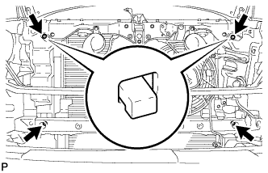 |
Set the radiator bracket hooks to the radiator support holes.
Install the radiator with the 4 bolts.
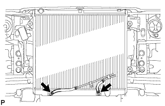 |
Connect the 2 oil cooler hoses.
| 2. INSTALL FAN SHROUD |
 |
Install the fan pulley to the water pump.
Place the shroud together with the cooling fan between the radiator and engine.
Temporarily install the cooling fan to the water pump with the 4 nuts. Tighten the nuts as much as possible by hand.
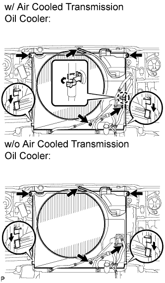 |
Attach the claws of the shroud to the radiator as shown in the illustration.
Install the shroud with the 2 bolts.
Connect the oil cooler tube to the fan shroud with the 2 bolts.
w/ Air Cooled Transmission Oil Cooler:
Pass the hose through the flexible hose clamp and close the clamp as shown in the illustration.
Connect the reservoir hose to the upper side of the radiator tank.
|
Tighten the 4 nuts of the cooling fan.
| 3. INSTALL NO. 2 RADIATOR HOSE |
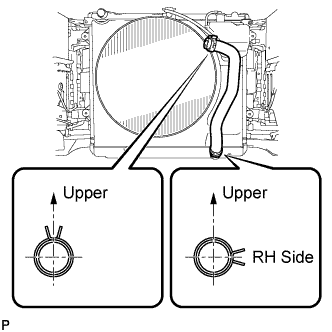 |
Using needle-nose pliers, grip the claws of the clamps and slide the clamps to install the radiator hose.
| 4. INSTALL NO. 1 RADIATOR HOSE |
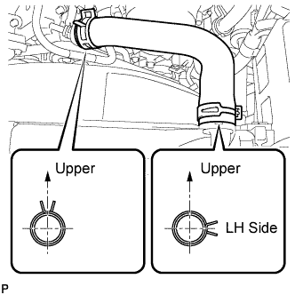 |
Using needle-nose pliers, grip the claws of the clamps and slide the clamps to install the radiator hose.
| 5. INSTALL FAN AND GENERATOR V BELT |
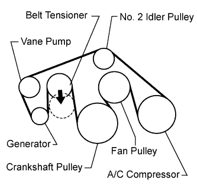 |
Set the V belt onto every part except the belt tensioner, as shown in the illustration.
Loosen the V belt by turning the belt tensioner counterclockwise.
Set the V belt to the belt tensioner.
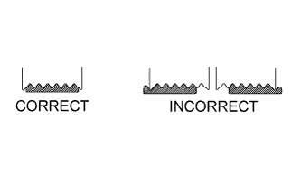 |
Check that the belt fits properly in the ribbed grooves.
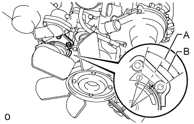 |
Check that the arrow on the belt tensioner is within area "A".
If the arrow is outside area "A", replace the fan and generator V belt.
| 6. INSTALL AIR CLEANER HOSE ASSEMBLY |
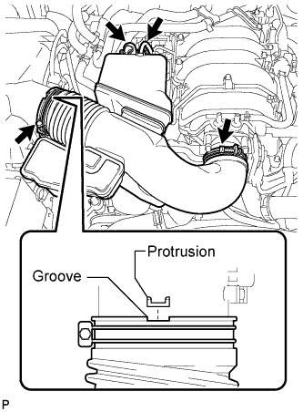 |
Install the air cleaner hose so that the protrusion of the air cleaner cap aligns with the groove of the hose as shown in the illustration.
Tighten the 2 clamps.
Connect the vacuum transmitting hose.
Connect the No. 2 ventilation hose.
| 7. ADD ENGINE COOLANT |
Add engine coolant.
| Item | Specified Condition | |
| w/o Transmission oil cooler | w/o Rear Heater | 13.4 liters (14.2 US qts, 11.8 Imp. qts) |
| w/ Rear Heater | 16.3 liters (17.2 US qts, 14.3 Imp. qts) | |
| w/ Transmission oil cooler | w/o Rear Heater | 14.1 liters (14.9 US qts, 12.4 Imp. qts) |
| w/ Rear Heater | 16.9 liters (17.9 US qts, 14.9 Imp. qts) | |
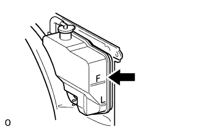 |
Slowly pour coolant into the radiator reservoir until it reaches the F line.
Install the radiator reservoir cap.
Press the inlet and outlet radiator hoses several times by hand, and then check the coolant level. If the coolant level is low, add coolant.
Install the radiator cap.
Start the engine and warm it up until the thermostat opens.
Maintain the engine speed at 2000 to 2500 rpm.
Press the inlet and outlet radiator hoses several times by hand to bleed air.
Stop the engine, and wait until the engine coolant cools down to the ambient temperature.
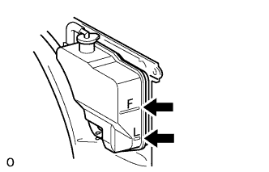 |
Check that the coolant level is between the F and L lines. If the coolant level is below the L line, repeat all of the procedures above. If the coolant level is above the F line, drain coolant so that the coolant level is between the F and L lines.
| 8. INSPECT FOR COOLANT LEAK |
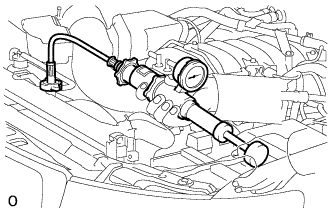 |
Fill the radiator with coolant and attach a radiator cap tester.
Warm up the engine.
Using the radiator cap tester, increase the pressure inside the radiator to 123 kPa (1.3 kgf/cm2, 18 psi), and check that the pressure does not drop.
If the pressure drops, check the hoses, radiator and water pump for leaks. If no external leaks are found, check the heater core, cylinder block and head.
| 9. INSTALL TRANSMISSION OIL COOLER AIR DUCT (w/ Air Cooled Transmission Oil Cooler) |
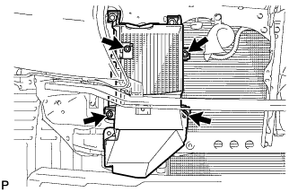 |
Install the oil cooler air duct with the 4 bolts.
| 10. CONNECT RADIATOR SIDE DEFLECTOR RH (w/o Air Cooled Transmission Oil Cooler) |
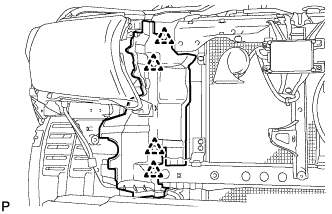 |
Connect the deflector with the 4 clips.
| 11. CONNECT RADIATOR SIDE DEFLECTOR LH |
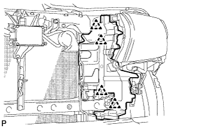 |
Connect the deflector with the 4 clips.
| 12. INSTALL FRONT BUMPER COVER |
for Standard Type:
Refer to the following procedures (Click here).
w/ Winch Type:
Refer to the following procedures. (Click here).
| 13. INSTALL RADIATOR GRILLE |
 |
Attach the 2 clips and 8 claws to install the radiator grille.
Install the 3 screws.
| 14. INSTALL FRONT BUMPER WINCH COVER SUB-ASSEMBLY (w/ Winch) |
| 15. INSTALL UPPER RADIATOR SUPPORT SEAL |
Install the radiator support seal with the 7 clips.

| 16. INSTALL V-BANK COVER SUB-ASSEMBLY |
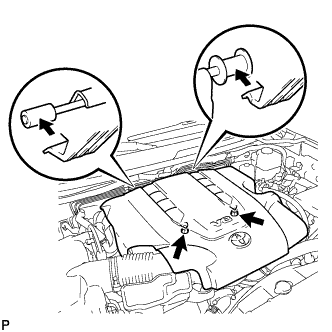 |
Attach the 2 V-bank cover hooks to the bracket.
Install the V-bank cover with the 2 nuts.
| 17. INSTALL NO. 1 ENGINE UNDER COVER SUB-ASSEMBLY |
 |
Install the No. 1 engine under cover with the 10 bolts.
| 18. INSTALL FRONT FENDER SPLASH SHIELD SUB-ASSEMBLY LH |
 |
Push in the clip indicated by the arrow in the illustration to install the fender splash shield.
Install the 3 bolts and screw.
| 19. INSTALL FRONT FENDER SPLASH SHIELD SUB-ASSEMBLY RH |
| 20. INSPECT ENGINE COOLANT LEVEL |
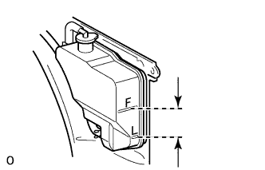 |
Check that the engine coolant level is between the L and F lines when the engine is cold.
If the engine coolant is low, check for leaks and add "TOYOTA Super Long Life Coolant" or similar high quality ethylene glycol based non-silicate, non-amine, non-nitrite and non-borate coolant with long-life hybrid organic acid technology to the F line.
Remove the radiator cap, and check that the coolant level is up to the radiator filler hole.